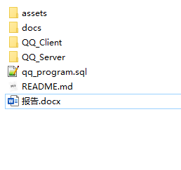
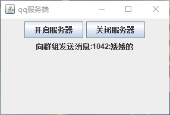
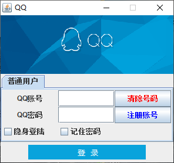
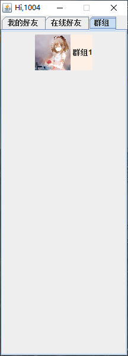
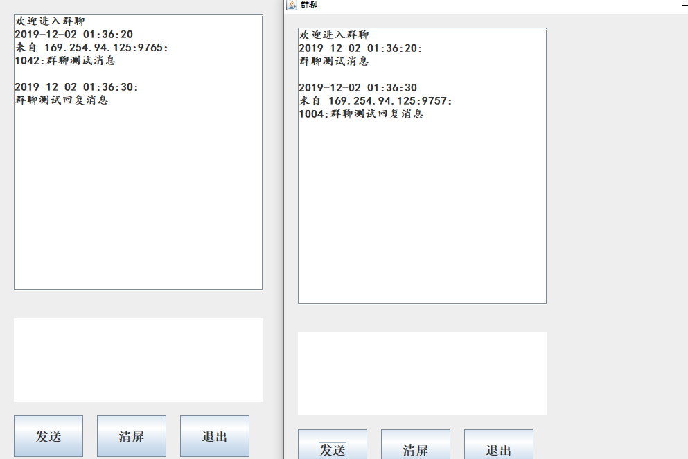

QQ_Chat
基于TCP,Socket编程，模仿腾讯QQ界面，使用Java开发的一款网络聊天工具。
（内含报告）
工具：
Eclipse、Navicat for MySQL、MYSQL、GBK
概述：
通过Socket实现TCP编程，使用多线程实现了多客户端的连接。模仿腾讯QQ的界面，功能较为简单，但是使用了最基本的网络编程技术，如socket、tcp、I/O阻塞、多线程、MySQL数据库等。
功能介绍：
该系统实现了用户的注册、登录以及与好友聊天的功能。
- 用户注册：系统随机生成账号，用户按照要求填入相应的信息。
- 用户登录：用户根据自己的账号和密码进行登录。
- 好友聊天：登录成功后，点击好友列表中的好友进行聊天。
- 群聊：（群聊聊天室写死，只有一个聊天室）
效果展示预览






